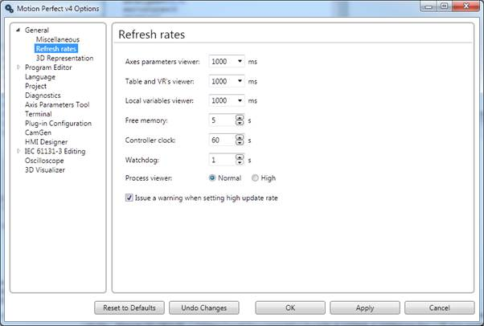

This dialog allows the user to set the refresh rates for periodically gathered data values. There is also a check box to enable a warning if the refresh rates are set high enough to affect the other functionality in Motion Perfect.